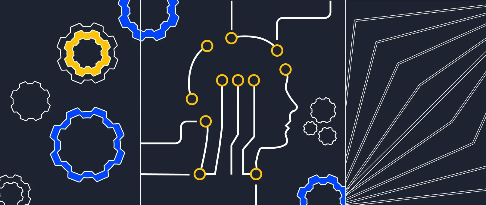
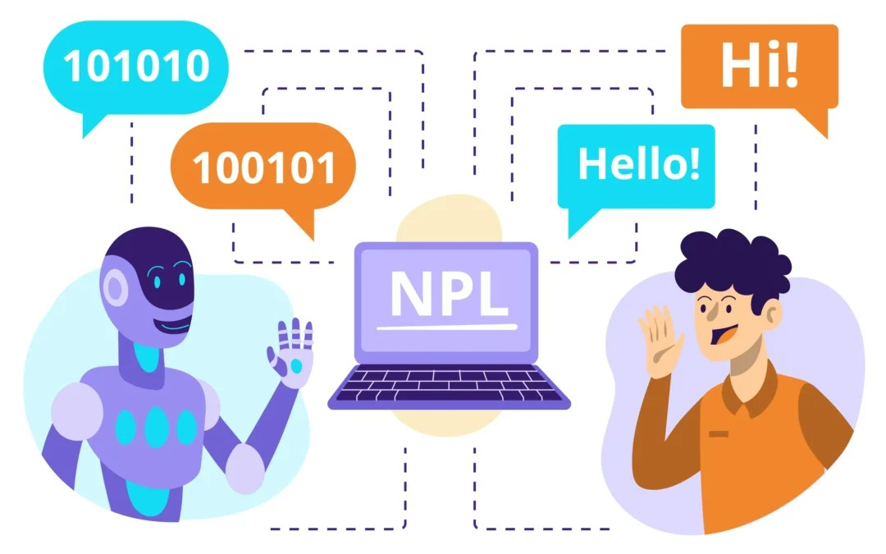

La Inteligencia Artificial en el Desarrollo de Software
Cómo la IA está transformando la forma en que diseñamos,
programamos y mantenemos aplicaciones.
¿Qué papel juega la IA en el desarrollo de software?
La IA está revolucionando el proceso en que se desarrollan las aplicaciones.
Permite automatizar la generación de código, optimizar pruebas, detectar anomalías
e incluso agregar funciones inteligentes. Todo esto aumenta la productividad,
la precisión y la innovación.
Entre las tecnologías que se utilizan están el aprendizaje automático (ML),
el procesamiento del lenguaje natural (NLP) y la IA generativa.
Beneficios
Aceleran el desarrollo de código
Herramientas como GitHub Copilot ayudan a escribir código más rápido, detectar errores y sugerir mejoras en
tiempo real.
Reduce costos operativos
Permite automatizar tareas repetitivas o análisis de datos, así ahorrando tiempo y recursos, permitiendo al
equipo se enfocarse en lo estratégico.
Mejora la experiencia del usuario
La IA permite ofrecer interfaces personalizadas, respuestas rápidas y decisiones más inteligentes que
impactan directamente en la satisfacción del cliente.
Potencia la innovación
Permite experimentar con nuevas ideas, prototipar soluciones más rápido y adaptarse mejor al mercado.
¿Cómo la IA esta afectando el ciclo de vida del software?
El uso de IA generativa esta mejorando la productividad y optimizando la eficiencia en cada etapa del SDLC
Recopilación y análisis de requisitos
La IA nos permite convertir ideas generales en caracteristicas y requisitos detallados, analizando los
objetivos comerciales y necesidades de los usuarios solo usando entradas de lenguaje natural, permitiendo
acelerar esta fase y reducir errores.
Diseño y planeación
La IA generativa mejora el diseño de software al sugerir buenas arquitecturas, crear maquetas, interfaces y
diagramas automáticamente basándose en restricciones. Esto ahorra tiempo y esfuerzo, haciendo que el proceso sea
más rápido. Además, los desarrolladores pueden usarla para reutilizar diseños y mantener la coherencia entre
diferentes proyectos.
Desarrollo
La IA permite a lo desarrolladores centrase en problemas mas complejos, mientras ella hace las tareas
repetitivas por medio de la generacion de codigo, el autocompletado y las sugerencias en tiempo real, mejorando
la velocidad y la precisión.
Pruebas
La IA generativa se encarga de crear y ejecutar pruebas automáticamente. Revisa el código para identificar qué
partes deben probarse, detecta errores antes y disminuye el trabajo manual. Así mejora la calidad del software y
hace que el proceso de pruebas sea más rápido y eficiente.
Despliegue
La IA generativa mejora los procesos de integración y entrega continua (CI/CD) al predecir errores y sugerir
mejoras para que las versiones sean más rápidas y estables. También permite a los ingenieros gestionar los
entornos técnicos, ya sea en la nube o en servidores locales, y controlar el despliegue de las aplicaciones en
distintas etapas, asegurando transiciones sin problemas durante todo el desarrollo.
Mantenimiento y soporte
La IA generativa analiza el software después del despliegue para encontrar partes del código que se pueden
mejorar u optimizar. Supervisa el rendimiento en todo momento, detecta fallos o comportamientos extraños y
anticipa posibles problemas, lo que aumenta la estabilidad del sistema y reduce el tiempo necesario para
resolver incidentes.
Documentación
La IA generativa puede crear y actualizar automáticamente la documentación, como guías de API o explicaciones
de código. Esto asegura que la información esté siempre actualizada y correcta, y evita que los desarrolladores
tengan que hacerlo de forma manual.
Retroalimentación y mejora continua
La IA estudia cómo usan los usuarios la aplicación y cómo rinde el sistema, y a partir de eso sugiere mejoras
para versiones futuras. Gracias a esto, los desarrolladores pueden enfocarse en las funciones y ajustes que
realmente aportan más valor.
Tecnologías clave en el desarrollo de software con IA

Aprendizaje automático (Machine Learning, ML)
Permite que los sistemas aprendan de los datos y mejoren con la experiencia.

Procesamiento del lenguaje natural (Natural Language Processing, NLP)
Posibilita la comprensión e interpretación del lenguaje humano.
IA generativa
Es un subconjunto de la Inteligencia Artificial capaz de crear nuevos contenidos de forma significativa e
inteligente, como texto, imágenes o código.